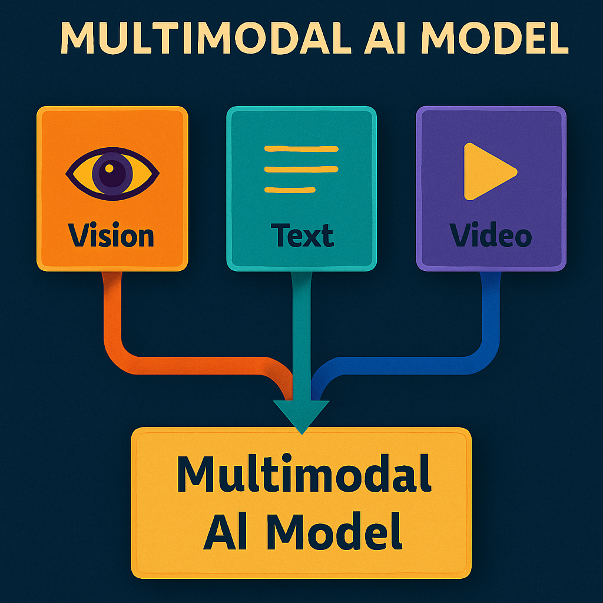
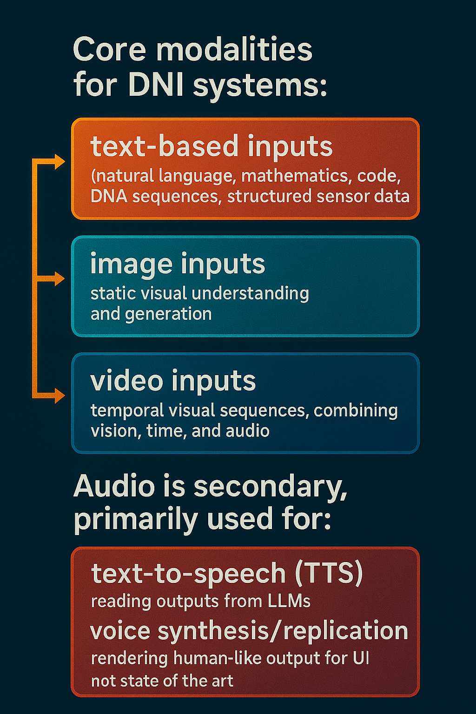
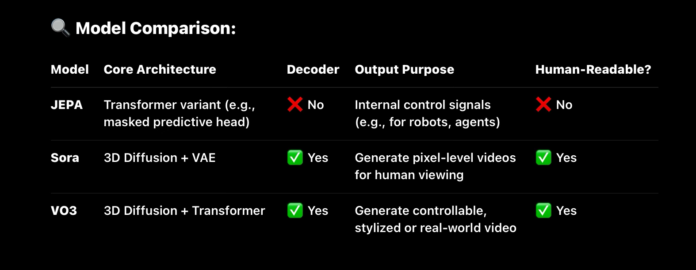

These are my structured notes and observations on where AI is actually headed — grounded in architectural trends, system design shifts, and how these models are being deployed in the real world.
⸻
I believe what will define the next 10–20 years is not Artificial General Intelligence (AGI), but something I call Deep Narrow Intelligence (DNI):
• Foundation models trained for autonomy
• Operating across bounded domains
• Executing tasks at or beyond human-level performance
⸻
This is not meant to be a perfectly flowing essay.
⸻
These are working notes — raw but deeply considered — that outline what I believe to be a pragmatic and underdiscussed direction for the field.
⸻
While most conversations orbit around AGI or superintelligence, I believe DNI better reflects what’s emerging:
systems of immense capability, but without generality, and without being agentic.
Deep narrow intelligence (DNI)
🧠 What is Deep Narrow Intelligence (DNI)?
DNI refers to autonomous foundation models that can outperform most humans on complex, real-world tasks within defined domains. These systems are not AGI — they are not agentic or philosophically “understanding” — but they are task-effective, multimodal, and increasingly autonomous.
⸻
✅ Core Characteristics of DNI:
- Domain-Specific Excellence
• Outperforms 95-99% of humans in a given domain
• Video generation, art generation,playing video games, protein folding,predicting gene expresson, drone navigation, driving cars, flying planes, robotic surgery, all lavels of mathematics,software development, strategy games, legal analysis and advice , electronics manufacturing)
• Key: High competence in one domain, not transferable generality.
• Strong generalization within constraints, without crossing into full general intelligence
- Bounded World Simulation + Planning
• Can simulate, reason, and plan across bounded environments (e.g. virtual worlds, industrial processes, dynamic web systems)
• Supports hierarchical, multi-step planning with goal memory
- Multimodal or Omnimodal Fusion
• Core modalities for DNI systems:
Text-based inputs (natural language, mathematics, code, DNA sequences, structured sensor data) Image inputs (static visual understanding and generation) Video inputs (temporal visual sequences, combining vision, time, and audio)
• Audio is secondary, primarily used for:
Text-to-speech (TTS): Reading outputs from LLMs Voice synthesis/replication: Rendering human-like output for UI Not typically a SOTA input modality for deep reasoning or decision-making
• Fusion means convergence of these streams, where models can:
Interpret temporally extended scenes (e.g. video + subtitles + audio cues) Ground language in vision and action Generate multimodal output from cross-modal context (e.g. video from text prompts or robot commands from video input)
• Multimodal fusion is critical for video generation models operating in embodied or interactive environments (e.g. self-driving cars, drones, industrial robotics)

- Memory + Feedback Adaptation
• Uses memory blocks, episodic context, and feedback for continual updating
• Doesn’t “retrain” — it adapts live, like an expert with history
Operates autonomously but within well-defined operational boundaries and known task distributions.
- Autonomy
• Operates with minimal human intervention
• Makes decisions, initiates tasks, monitors outcomes
• Optimizes toward high-level goals in real-world systems as long the task is within its training distribution
- Deeper Representations, Less Hallucination
• Uses structured memory, attention routing, and feedback to ground outputs
• Produces far more accurate, less brittle, and more interpretable outputs
Adaptation could occurAdaptation occurs continuously during operation, enabling dynamic fine-tuning without costly retraining cycles. continuously during operation, enabling dynamic fine-tuning without costly retraining cycles.
- Mass Deployment Potential
• Can be deployed across:
• Phones, tablets, desktops
• Drones, cars, robots
• Cloud platforms and edge devices
• Generates billions of outputs/day across industries
enabling widespread real-time applications across consumer, industrial, and scientific domains.
⸻ ⸻
Architectural Advances Enabling the Next Leap in DNI in LLM
Text: language,mathematics,code,DNA sequence
- Data Pipelines & Pretraining Upgrades
• Cleaner, denser, and more structured corpora: Less web noise, more engineered data (text, code, docs, multimodal pairings)
• Highly diverse agent-task logs: Foundation for simulation-based training and real-world grounding
• Self-corrective bootstrapping loops: Models critique or improve their own outputs during pretraining or fine-tuning
⸻
- Long-Term Memory Modules
• Episodic memory blocks that retain:
• Past conversations and decisions
• User-specific preferences
• Interaction context across sessions
• Learned memory slot management: Model learns what to store, update, retrieve, and forget
• Structured key-value memories (e.g., RETRO, RMT-like) for contextual recall
⸻
- Context Expansion (1M-3M tokens)
• Massive temporal context windows enabling:
• Document-level reasoning
• deeper story telling
• Simulation continuity
• Dialogue consistency across hours
• Sparse attention / segment routing: Needed to make longer contexts efficient and interpretable
2 and 3 will work together to make LLMs no longer statless in the way they are today. ⸻
- Embedded Retrieval + In-Context Memory Routing
• Hybrid retrieval + parametric memory:
• Embedded retrieval from vector DBs
• In-context routing to local memories (or recent frames, files, APIs)
• Intelligent context composition: Model chooses what to retrieve and where to inject it
• Foundation for agentic memory (e.g. ReAct + MemoryGPT)
There’s no special neural layer or architectural change inside the LLM.
Instead, augmented retrieval (like RAG — Retrieval-Augmented Generation) is:
• An external retrieval system (usually a vector database + embedding model)
• An API call or local function that fetches relevant info
• A prompt augmentation step, where you prepend or inject the results into the prompt
• The LLM then processes it all using regular multi-head attention
In short:
🧠 The LLM remains untouched. The “retrieval” is all done outside it.
⸻
- Better Tool Grounding (Multimodal + Code + Action)
• Structured interface with tools, including:
• Code execution
• Database queries
• API calls
• File system actions
• Robotic manipulation
• Hierarchical action modeling: Models break down tasks into subtasks and use tools as needed
• Grounded tool use = fewer hallucinations
• Not guessing facts — looking them up or calculating them
• Not imagining images — generating and critiquing them
⸻
- Modular Reasoning & Reduced Hallucination
• Separation of planning and generation
• E.g., inner monologue, scratchpad planning, tool orchestration
• Self-reflection + verification modules:
• Critique, verify, then answer
• Especially useful in code, math, and reasoning-heavy workflows
• Internal world models (JEPA-like) that stabilize reasoning over time
- Weighted Knowledge Source Modeling
A DNI LLM includes explicit architectural and training-time mechanisms to differentiate signal from noise.
⸻ ⸻
✅ 1. Source-Ranked Embedding Space
• All training data is mapped with metadata-aware embeddings, which include:
• Source type (book, blog, academic journal, .gov, etc.)
• Source authority score (based on citations, peer review, recency, etc.)
• Bias vector (left/right bias, corporate/personal, etc.)
• This enables the model to learn not just language patterns, but information provenance and credibility.
⸻ ⸻
✅ 2. Internal Retrieval + Trust Weighting
• During inference, the model retrieves internal representations of facts and weighs them based on:
• Source reliability
• Internal consistency
• Historical accuracy (e.g., via TruthfulQA or human feedback loops)
⸻
✅ 3. Trusted Memory Module (TMM)
• DNI LLMs maintain a separate, curated “trusted memory” trained on:
• Primary documents
• Peer-reviewed materials
• Expert-authored works (e.g., Oxford University Press, biographies from renowned historians)
• When asked complex factual questions (e.g., “What changed after the Glorious Revolution?”), the model pulls first from TMM — and only accesses broader knowledge if ambiguity exists.
⸻
💡 Result
• No more hallucinated history or factually plausible but inaccurate responses.
• Instead, answers are:
• Factually grounded
• Traceable
• Sourced from a ranked evidence base
• Able to explain why one source was chosen over another
⸻
8.Superior Attention Mechanisms for 1D Data
• Advanced attention blocks (e.g., multi-headed latent attention and beyond) that extract deeper, higher-level, abstract patterns from one-dimensional data (language, code, math, DNA sequences).
• These mechanisms drastically reduce hallucinations by better capturing complex dependencies and semantic relationships within 1D data streams which improves pattern recognition and contextual understanding.
• Development of advanced attention architectures beyond standard multi-headed attention (e.g., Multi-Head Latent Attention and further innovations).
• Enhanced ability to extract deeper, higher-level, and more abstract patterns from one-dimensional data sequences such as text, code, math formulas, and DNA sequences.
• Improved attention efficiency and interpretability, enabling the model to focus on the most relevant information even in extremely long contexts.
• This advancement supports more robust reasoning, factual accuracy, and reliable generation across diverse domains.
⸻
Expected Performance Gains
Accuracy improvements aiming for 95%+ correctness in well-represented domains like text, code, math, and genomics. Autonomous, grounded, persistent, and composable LLMs that can handle complex, multi-modal, multi-session tasks.
⸻
• 10× context window
• superior attention block mechanisms
• memory blocks
• Tighter tool use
• MOE MHLA
⸻ ⸻
DNI in text domains (code, math, language , genomics) becomes:
• Autonomous (fewer prompts, more persistent goals)
• Grounded (fewer hallucinations, tighter tool use)
• Persistent (long-term memory across tasks and users)
• Composable (handles documents, videos, APIs, and user behavior as one fluid task)
⸻
DNI for 2D Diffusion for Image generation
Over the next two decades, deep narrow intelligence will significantly advance the state of AI-driven image generation, moving far beyond today’s capabilities while staying grounded in realistic architectural and computational trends. Here’s what to expect:
•Fully Consistent Multi-View Generation AI systems will produce sets of images from multiple perspectives that maintain coherent lighting, texture, and geometry, effectively bridging the gap toward true 3D understanding. This will allow users to view and manipulate scenes or objects from any angle with photorealistic fidelity.
• Photorealistic Lighting and Depth
• Advances in rendering and neural shading will deliver dynamic lighting and depth effects that make AI-generated images indistinguishable from real photographs, including realistic shadows, reflections, and atmospheric effects.
• Zero-Shot Style Transfer and Creative Control
• Models will enable users to “draw” in virtually any artistic style or medium simply by providing a text prompt or reference image, supporting fluid, intuitive creative workflows without the need for specialized training on each style.
• Editable Latent Representations
• One of the most transformative advances will be the development of finely controllable latent spaces. Users will gain interactive, precise control over specific image attributes — such as pose, lighting, background, and expression — allowing for targeted, incremental tweaks. These edits will be computationally efficient, requiring minimal recomputation and enabling real-time refinement of generated images. While current systems offer limited forms of this control, future models will make it seamless and highly granular.
• 3D-Consistent, Manipulable Visuals
• Images will evolve beyond static 2D outputs into fully manipulable 3D assets that can be rotated, scaled, and viewed from different angles without losing coherence or realism. This capability will blur the lines between image generation and 3D modeling, enabling immersive content creation directly from generative AI.
• Interactive Visual Tools for Creativity Users will be empowered to “paint” with text, gestures, or other inputs to modify generated images intuitively, allowing AI to serve as a collaborative partner rather than a black-box creator.
• Integration with Game Engines and Real-Time Simulations 2D diffusion models will become integral components of real-time 3D environments — generating textures, environment art, and UI elements on the fly to enrich immersive simulations and interactive media.
⸻ ⸻
🎥 DNI for Video Generation
Where frontier models are headed — post-Sora, post-Veo, toward “Veo-6-tier” systems with deep architectural and narrative coherence.
📍 Overview
The future of video generation models will not be text-to-clip toys — it will be cinematically and causally intelligent simulators, trained on all video ever digitized, with episodic memory, character awareness, and compositional temporal planning.
⸻
🧠 Foundational Realization
Video is not multimodal — it is one fused modality of temporally synchronized visual, auditory, and linguistic cues.
Generation must respect this entanglement — not merely align them post-hoc.
⸻
📦 Training Substrate: “All Video Ever Digitized”
Sources:
• YouTube (diverse content: narrative, instruction, humor, vlogs, livestreams)
• Movies + TV (camera work, plot arcs, acting, lighting continuity)
• TikToks / Reels / Shorts (compressed high-intensity sequences)
• Podcasts + Video essays (complex verbal threads + minimal visuals)
• CCTV / Surveillance (causal body dynamics, passive events)
• Video Game Cutscenes (semi-synthetic emotional simulations)
Purpose:
• Learn realistic event progression, multi-agent choreography, emotional synchrony, dialog flow, lighting coherence, sound timing, spatial reasoning.
⸻
✅ Core Evolution
From:
• Prompt-to-clip (5–15s, generic, low continuity)like current video generation models
To:
• Prompt-to-episode (5–40 min), with:
• 🎭 Character persistence (appearance, voice, emotion)
• 🧠 Episodic memory (across scenes, arcs, spatial layouts)
• 💬 Narrative & dialogue continuity (interactions with purpose)
• 📽️ Scene-to-scene visual and lighting continuity
• 🎧 Synchronized audio: dialog, ambiance, and music
• 🧠 Emotionally & contextually aware character behavior,dialogue and development
• 🕹️ Multi-character interactions with goal-oriented actions
• Temporally coherent music, voice, and expression
⸻
🧠 Architectural Backbone
- MoE / MHLA-style Routing for Video
• Frame-wise & segment-wise expert routing
• Adaptive routing across:
• Visual streams
• Temporal events
• Audio (speech, music, ambient)
• Memory states
• Enables scaling depth and temporal length ⸻
- Episodic Sequential Memory Layers
• Tracks scenes, locations, character states, emotional arcs
• Allows:
• Long-range scene planning
• Context carryover between episodes
• Realistic multi-character plots
Longform memory stores:
• Scene goals
• Agent states
• Visual themes
• Narrative beats
⸻
- Conditioned Multi-Agent Behavior
• Characters with:
• Believable facial expression & body movement
• Persistent speech & goals
• Group dialogue logic and social dynamics
• Core for:
• Dramas, sitcoms, education modules, story-driven games
⸻
- Temporal & Spatial Consistency Layers
• Stabilizes:
• Lighting
• Scene geometry
• Environmental physics
• Emotional tone
• Prevents:
• Jitter
• Style drift
• Temporal dislocation
Character Identity + Group Dynamics Module
• Character tracking across time and scenes
• Maintains:
• Face, voice, gesture style
• Interpersonal goals + emotions
• Physical positioning + attention
⸻ ⸻
- Temporal-Spatial Style Consistency Layers
• Prevents:
• Flicker
• Expression collapse
• Background drift
• Lighting mismatches
• Dialogue–emotion desync
⸻ ⸻
🚀 Implications (Why It Matters)
When this tier of DNI for video arrives:
• 95% of animation, cutscene, explainer, and short film pipelines collapse into prompt–edit–review cycles
• Entire creative industries shift to co-piloting agents with specialized episodic memory
• Education, simulation, storytelling, and marketing are transformed
• “Show, don’t tell” becomes trivial at production scale
⸻
🧭 Example Applications
• 🎮 Video game previsualization with consistent characters and world logic
• 🧪 Scientific simulation visualization in real-time (e.g. cell processes, climate)
• 🎓 Custom very accurate educational videos generated from lesson plans
• 📺 Personalized shows for children, tuned to learning goals and preferences
• 🎥 AI copilot for YouTubers, filmmakers, animators able to generate entire proprietary videos across all
• 🎮 Interactive video will become a reality, enabling advanced AI generated AAA-style hub worlds featuring dynamic characters, persistent memory, real-time environmental changes, and branching narratives — all generated through natural language prompts and evolved over time with consistency(which we see VERY minuscule, weak version of with genie 3)
• 🎮 gaming companions that play video games with you or take over playing when you ask it to and communicates in real time via text prompt or possibly voice
⸻
Once unified into a single transformer architecture, models like Genie 3 — equipped with an Action Embedding module — could theoretically support real-time cinematic generation (TV or movie scenes) guided by natural language. However, the compute requirements are extreme, given the sheer number of frames, spatial resolution, temporal coherence, and interaction dynamics involved.
Possibilities with Interactive Video
- Interactive Movies and Storytelling
Viewers influence plot directions, character decisions, and endings in real time. Narrative adapts dynamically based on viewer reactions, mood, or preferences. Multi-threaded storylines where each watch-through is unique, personalized to emotional and cognitive profiles.
- Personalized Cinematic Experiences
Films tailored on-the-fly for cultural background, language, or even psychological needs. Adaptive pacing, music, and dialogue shifts to maximize emotional impact.
- AAA-Quality Game Hub Worlds and Cutscenes
Procedurally generated, explorable worlds with cinematic quality graphics and coherent story arcs. In-game cinematics generated in real time, responsive to player actions and choices. Characters with evolving behaviors, motivations, and memories, creating truly dynamic gameplay narratives.
- Real-Time Virtual Social Spaces and Events
Fully interactive concerts, conferences, or social hubs with AI-generated audiovisual environments. Personalized avatars that act, speak, and react naturally, powered by deep video and multimodal models.
- Educational and Training Simulations
Immersive, adaptive video scenarios for complex skills training (medicine, aviation, crisis response). Realistic role-playing with virtual humans that respond with nuanced emotional and behavioral cues.
- Hybrid Entertainment and Utility
Mixed reality applications where interactive video overlays real environments with rich, evolving digital content. Virtual assistants or companions embedded within cinematic, immersive video contexts.
Without a breakthrough in architectural efficiency — such as a Mixture of Experts (MoE)-style routing for video tokens or radically compressed latent spaces — this vision remains speculative at full scale. Current methods can support short-form or episodic scenes, but real-time movie-length generation is likely a long-term goal, not an imminent capability.
⸻
7.Scenario Exploration: Highly detailed, dynamic reenactments of natural disasters, economic events, or social interactions — useful for education, training, and decision-making.
⸻
8.Virtual Experiences: Richly detailed virtual tours of inaccessible places (historical sites, deep oceans, space missions) with the ability to interact and influence the experience in real time.
⸻
9.Phenomena Simulation: Visualizing complex physical or social processes (climate models, urban development, biological growth) in ways accessible and understandable to experts and laypeople alike.
⸻
Looking Ahead: The Future of Interactive Video in DNI
While early models like Genie 3 hint at the potential for real-time, interactive video worlds, true mastery over video — integrating ultra-realistic visuals, seamless temporal coherence, and rich audio — remains years away. Given that video is the richest and most computationally demanding modality, it will likely be the slowest to mature among the core modalities.
When these challenges are overcome, the implications will be profound: fully dynamic, highly immersive interactive movies, virtual environments for advanced simulations, training, and entertainment that blend hyper-realism with meaningful user interaction. Until then, incremental advances will steadily build the foundations of this exciting frontier.
⸻
🧩 On Video Modality
Video is not multimodal in the architectural sense — despite containing vision, time, and audio. All features are embedded into a unified latent space. This makes it a single, highly complex modality.
• Multimodal models (e.g., image+text, audio+text) maintain separate encoders and latent spaces for each input type.
• Video generation models fuse everything (frames, motion, sound) into one learnable space, often with 3D diffusion latents or tokenized video segments.
• Thus, while video includes multiple perceptual elements, it is not multimodal from a modeling perspective — it is a monomodal super-modality.
This distinction matters when designing new architectures or benchmarking generative fidelity: video isn’t multimodal—it’s deeper.
⸻
⸻
📐 System Capabilities — Future Benchmarks
✅ Prompt-to-Episode Generation
• 10–40 minute vidoes
• Emotionally intelligent dialogue
• Physical realism
• Cinematic pacing
• Multi-agent plotlines
⸻ ✅ Style Transfer + Retargeting
• “Make this in Wes Anderson’s style”
• “Set it in a 1930s noir tone”
• “Animate this scene using Pixar-style rendering” ⸻
✅ Real-Time Editing / Simulation
• Swap actors, plot branches, camera angle
• Adjust tone, pacing, genre in seconds
• Embodied NPCs for games + education
⸻
🧮 Reality Check
• Current models are still primitive compared to this vision.
• Achieving this requires:
• Orders-of-magnitude more compute
• Breakthroughs in video memory, agent modeling, dialogue planning, and temporal stability
• Likely a 3D diffusion-based architecture with powerful routing and long-horizon memory
⏳ Estimated timeline: more than 10 years
⸻
The Power of Pattern Recognition:
Most of what humans do every day doesn’t require deep scientific understanding or original imagination. Instead, it hinges on advanced pattern recognition—learning and applying reliable sequences of actions that lead to desired results.
Take cooking as an example. When following a recipe, you aren’t performing molecular chemistry using a deep scientific understanding; you’re executing a set of proven steps that reliably produce a particular dish. Similarly, driving a car doesn’t demand a detailed scientific understanding of the physical world. Instead, drivers rely on an internalized world model built from experience—recognizing patterns like traffic rules, obstacle avoidance, and cause-and-effect in the environment.
Manufacturing electronics or assembling clothing also follow this principle. Workers do not understand every material property or production process scientifically, but they expertly replicate and optimize sequences of actions demonstrated over time depending on use case through repetitive sequences of well-defined actions and quality checks — patterns that can be observed, learned, and automated without requiring deep domain expertise.
Consider gardening or farming: gardeners don’t understand the complex biology of soil microbes or plant genetics. Instead, they recognize seasonal patterns, watering schedules, and signs of plant health to cultivate crops successfully.
Art and Music: While often seen as creative, much artistic expression involves recognizing and recombining familiar patterns of color, shape, rhythm, and melody. Human artists learn styles and techniques that they replicate or subtly modify based on patterns they’ve absorbed over time. Much of what humans create—whether art, music, writing, or even daily problem-solving—relies heavily on recognizing and recombining patterns learned over time. When you paint a picture, compose a song, or write a story, you’re often blending familiar elements in new ways, based on what you’ve seen, heard, or read before. This kind of creativity, while impressive, is largely pattern-based.
However, true ingenuity goes far beyond pattern recognition. It involves fundamental breakthroughs that reshape entire fields of knowledge or culture. This level of creativity demands:
Abstract reasoning — thinking beyond the immediate data or patterns to grasp hidden principles. Deep understanding — comprehending the core mechanics of complex systems or ideas. Novel conceptual leaps — forming ideas that have never been imagined before, opening new paths for thought and discovery.
Language Use: Everyday conversation and writing frequently rely on learned linguistic patterns, idioms, and social cues,contextual patterns associated with different words(which words are used together most often?,what context do these words make sense in ? which ones do they not? how do these words relate to other words ? do they match the context? ) the human brain does this automatically, rather than novel invention of new grammar or concepts.
This reliance on pattern recognition explains why foundation models in Deep learning which excel at extracting and generalizing patterns from massive datasets, are uniquely suited to automate or augment a wide range of human activities—especially those that don’t demand original creativity or complex scientific insight.
⸻
The other part of my visions for video is :
• Embodied AI via JEPA-vido generation with very high performance acorss a variety of physical tasks
→ Moving from passive perception → to predictive, simulation-based learning
→ Foundation for AI that conrols robots to perform structured tasks like cleaning, cooking, and complex manipulation
→ Doesn’t require superintelligence — just deeply tuned narrow systems with the right feedback loops
•merges of multimodal processing and generation
• Autonomous agents that can carry out specific tasks at your request, not agentic, autonomous
• Embodied Utility Systems which is really just video generation
• doing laundry
• Cook full meals of nearly any kind
• Pack and ship products
• Clean hotel rooms
• Build homes
• Folding laundry
• Perform surgery with extreme precision
• navigating rooms
• using robotic arms
• welding
• mowing the lawn
• carpentry
• playing video games
⸻
Mass AI Manufacturing
As video models become more advanced, they will not only enable entertainment and simulation but also fundamentally transform manufacturing. Unlike tasks that require deep abstract reasoning or high-level creativity, most manufacturing work depends on pattern recognition and precise motor control — both of which neural networks excel at when given enough high-quality training data.
By training on massive, well-curated video datasets showing a product’s entire manufacturing process — from raw materials to final assembly — AI systems can learn not just what to do, but when and how to do it with extremely high fidelity. This training captures the visual, temporal, and auditory patterns involved in each step, allowing AI-integrated robotics to execute the process with consistent precision.
mass-manufactured products enabled by video-trained AI.
• Electronics (PCBs, smartphones, appliances) • Clothing & textiles • Furniture and home goods • Automotive parts and vehicles • Packaged food products • Consumer goods (tools, toys, kitchenware) • Medical devices
Once a process has been demonstrated and learned, the AI can replicate it at scale, adapt it for different designs, and optimize it for efficiency — all without needing a deep, human-like understanding of the product’s history or design philosophy. It becomes a perfect executor, transforming manufacturing from a labor-intensive activity into a largely automated, AI-driven process.
• Harvest crops across thousands of acres:video trained world models (Neural Networks)+ Robot bodies = Scalable Automation
• Each food category — from grains and vegetables to meat alternatives and complex prepared meals — can be automated using:
• Task-specific neural networks, trained on the physical and procedural aspects of producing that food item, all of which can be modeled in a massive video dataset
• Multi-agent robot swarms, each controlled by or interfaced with the relevant neural networks.
• Vision-language-action models, capable of responding to contextual instructions in factories, farms, or kitchens.
⸻
You could deploy thousands of expert models, each specialized in:
• diffent types of foods and thier production and preparation
• Controlling robotic actuators.
• Monitoring and correcting for quality, consistency, and hygiene in real-time.
• Optimizing for throughput and efficiency under varying conditions as it is able to generalize acorss its video training set.
• Massively Parallel Production
The Role of Superintelligence
While superintelligence would dramatically accelerate and optimize cross-system efficiency, resource allocation, and innovation cycles, the core infrastructure for scalable food, manufacturing, and logistics abundance can be built with state-of-the-art narrow video generation embodied AI systems. Superintelligence would primarily serve as the orchestrator of vast robotic ecosystems and complex adaptive supply chains.
⸻
⸻
• An AI model controlling tens of millions - hundreds of millions of robots in warehouses, kitchens, fields,delivery,manufacturing, hospitals, war — all executing parallel commands
• Shared weights, shared learning — infinitely scalable
• Brings per-task labor cost to near-zero
• Near-instant delivery ecosystems:
• State-of-the-art video generation models which enables Model-based control over robotic fleets.
⸻
Level 4 Autonomy AI : The Future of Physical Task Automation
Future embodied AI systems, exemplified by advanced transformer-based video models like JEPA, will move beyond passive perception to predictive, simulation-based learning. These models generate latent video predictions that allow them to simulate and plan complex sequences of actions, making them ideal for real-world robotics operating in structured environments.
Level 4 autonomy refers to AI systems capable of fully autonomous operation within well-defined, thoroughly trained domains. Unlike full autonomy (Level 5), Level 4 agents perform reliably as long as they operate within their known environment and training distribution, dynamically adjusting to feedback and gracefully handing off control when encountering novel or unsafe situations.
Key characteristics of Level 4 embodied AI systems:
Autonomous execution of multi-step tasks without human intervention Operation restricted to familiar, mapped environments (factories, warehouses, farms, homes, urban streets) Adaptive feedback loops for real-time error correction and learning Graceful fallback to human control or safe states when facing uncertainty
Example applications:
Industrial robots performing assembly, welding, painting, and quality control in standardized factories Agricultural robots harvesting, planting, and tending crops across large farms Service robots cleaning, cooking, and packing in hotels, kitchens, and warehouses Autonomous delivery and surveillance drones and Level 4 self-driving vehicles navigating urban, suburban and highway environments with no human intervention
⸻
Relation to world models:
JEPA and related transformer-based embodied AI models are self supervised modles trained to generate latent video to predict qhat will happen next making them well-suited to achieving Level 4 autonomy. They can simulate future states, plan complex sequences, and adapt their behavior based on ongoing sensory input — all without human oversight, within their trained domains.
Level 4 autonomy marks a critical stepping stone toward true, Level 5 full autonomy, where agents would operate robustly in any environment, including unforeseen or highly dynamic ones.
• Packages routed and dropped off the same day — even same hour — with no humans involved
• Autonomous farming systems managing irrigation, fertilization, and harvest
• Mostly still text- and tabular-driven, but upgraded with transformers
• Agent-like behavior without being “agents” in a full cognitive sense
Because AI models are not limited by human cognition or attention span, they can: •Orchestrate millions of robots simultaneously. •Run 24/7 production and navigation without fatigue •Continuously improve via self-supervised feedback loops or reinforcement from sensory data (e.g., temperature, texture, visual alignment, etc.). •This enables the cost of food production or any product or service to drop dramatically — not just through economies of scale, but through: •Hyper-optimization of supply chains. •Reduced labor costs. •Minimal waste and spoilage. •Localized micro-factories reducing shipping burden.
⸻
Connectivity and Autonomy Limits: Why Aircraft Are Different
Unlike ground vehicles, drones, or industrial robots which can rely on constant data center connectivity and predictable environments, manned aircraft operate in environments where real-time high-bandwidth connectivity is often unavailable or unreliable. Currently, neural networks (including future JEPA variants) require access to large data centers for processing and inference, limiting their viability for autonomous piloting of planes and helicopters.
Until breakthroughs in onboard AI compute, communication infrastructure, or robust local models occur, fully autonomous flight using video-based foundation models remains impractical. This is a notable exception in the broader vision of AI-driven physical autonomy.
⸻

📌 Key Similarities:
• All model causality, motion, and consistent physics over time.
• All work in latent space, even if some decode into pixel space.
• All could be integrated into agents (just JEPA already is).
⸻
🧩 Clarifying Misconceptions:
JEPA is not fundamentally different from Sora or VO3.
It is a video world model, but its output stays in latent space to guide downstream modules (like control, decision, or planning heads).
⸻
Meanwhile, Sora and VEO 3:
• Are rendered video generators.
• Include decoders to visualize outputs.
• Serve different interface layers (users, not actuators).
⸻
🎥 Two Fundamental Roles of Video in AI
- Decoded Video → Human Interface
• Purpose: For visual understanding by humans
• Use case: Films, games, education, communication, UI feedback
• Current frontier: OpenAI Sora, Runway, Pika, Luma Dream Machine
• Core bottlenecks:
• Temporal coherence
• Motion physics
• High-level semantic control (e.g., prompt-to-story)
• Fine-grained editing / conditional generation
⸻
This is what’s visible today — and what all the hype is about.
But it’s not the deepest use case.
⸻
- Latent Video → Actuator Interface (Undecoded)
• Purpose: For control, planning, and feedback inside AI agents or robots
• Use case: Embodied systems, autonomous agents, predictive planning
• Frontier: JEPA, VideoGPT, latent space world modeling, ControlNet-style conditioning for movement
• Output: No pixels. Just video-like latent representations fed into actuator controllers — arms, wheels, drones, etc.
• Analogous to: The brain predicting motion without ever “seeing” the world in rendered frames
This is real “video intelligence.”
It’s not about visuals. It’s about:
⸻
“Can the model understand what will happen in a temporally extended latent space — and act on it?”
And this is the real bottleneck for:
• Self-driving cars
• Home robotics
• Surgical arms
• Drone swarms
• Smart factories for mass manufactering various produtcs and services
• Smart farming
• And eventually: generalized embodied agents
⸻
🔸 Video’s Richness Comes at a Cost
Video is the most information-dense modality — combining space, time, motion, and sound — which makes it the ideal training ground for world modeling. But that same richness makes it the hardest to model. The input dimensions of video (especially with high resolution, long duration, and audio) are massive.Even state-of-the-art generative models like Sora and Veo 3 can only produce video in short bursts — typically under one minute — before quality degrades or coherence breaks.Why? Because the computational demands of processing and generating high-fidelity video over time are still immense. Training on video is also harder: unlike static images, video requires modeling temporal continuity, physical realism, and synchronized audio — all within an enormous latent space. Video is where AI learns the structure of reality — but it’s also where today’s models hit their computational limits. That richness is exactly what makes video the ideal domain for video generation and world modeling — but also the hardest to generate.Which is why p predict it will be the slowest of the 3 state of the art modalities in advancment.
⸻
🧠 Stage 1: Short-Term Planner (Few-Second Horizon)
Add a lightweight short-term planner on top of the predictor. This planner operates over a window of 2–5 seconds of predicted futures and:
• Selects a sequence of motor commands, not just a single step.
• Evaluates simulated trajectories (“walk forward 3 steps, turn, then stop”) instead of atomic actions.
• Still not agentic — just reactive planning with a short memory.
🧩 Useful for:
• Walking over uneven terrain
• Object handoff between arms
• Avoiding collisions in dynamic scenes
⸻
🧠 Stage 2: Mid-Term Memory + Replanning Loop
Introduce:
• Latent memory of recent context
• A re-evaluation loop: at every time step, the model:
• Remembers what it was trying to do
• Re-checks if the goal is still valid
• Re-plans if necessary
This makes the system robust to interruptions, like:
• A person walking in front of it
• An object slipping from its grip
⸻
Still not agentic — it doesn’t choose its own goals, just holds one in memory and adapts behavior to reach it.
⸻
🧠 Stage 3: Goal Stack + Task Sequencing (Hierarchical Planning)
Now we give it the ability to:
• Hold multiple sub-goals
• Sequence them intelligently based on task demands (e.g., “To cook, first grab pot → fill with water → place on stove”)
This requires:
• A hierarchical planner
• Possibly a language interface (to receive task sequences from a user or script)
🧩 Similar to: AlphaCode + Sora + ControlNet + JEPA working in coordination.
Still non-agentic — it follows externally defined goals, just with more flexibility.
⸻
🧠 Stage 4: Self-Supervised World Modeling + Abstract Tool Use
At this stage:
• The model builds its own internal world model over long spans of time.
• Learns to use abstract tools or modules (e.g., can call functions like “clean room” → composed of 14 steps).
• Could involve structured memory (key-value, episodic, vector store)
This starts to resemble system-level autonomy:
• Can evaluate performance across multiple goals
• Can pause, resume, or defer tasks
• But still not agentic — it cannot invent new goals or pursue self-interest.
What Memory Blocks Will Bring When Developed:
• Ability to store and recall complex task history
• Better handling of interruptions or multi-step tasks
• More robust long-horizon planning and adaptation
• Integration of episodic and semantic memories to support richer behavior
Summary:
• Memory blocks are the next step beyond immediate context encoders.
• When implemented, they’ll greatly enhance embodied AI’s ability to handle complex, long-duration tasks.
• Research in episodic memory, retrieval-augmented prediction, and differentiable memory architectures is actively moving this forward.
🎥 The Future Is Video-Centric
Video is the true multimodal supermodality:
• Vision → spatial structure, objects, scenes
• Time → motion, causality, state transitions
• Audio → speech, music, ambient sounds
• Language → dialog, subtitles, narrative cues (often embedded)
Because video combines all three major modalities — and increasingly mirrors how humans experience the world — it will dominate future architectures, training datasets, and benchmarks.
🔧 What DNI Actually Looks Like
These are the types of systems we’ll likely see proliferate across real-world domains:
⸻
🔊 Why Audio Is No Longer Standalone in SOTA
Audio as a standalone modality has diminished in prominence within state-of-the-art deep learning systems, largely because it has been absorbed into the richer video modality. Modern models treat audio primarily as a component of video—integrated with vision and temporal information—rather than as an independent channel for deep reasoning or generation. Today, audio is mostly used for specialized tasks like text-to-speech synthesis or voice replication, where the content is generated and processed by language model and the audio model simply read the text generated by the LLM our loud . Unlike text, image or video models, audio models do not perform semantic processing . This evolution underscores why audio alone is no longer considered a core modality for advanced AI capabilities but instead serves as a supporting element within broader multimodal systems.
• Standalone audio models (like Whisper or wav2vec) are still useful for specific tasks (speech recognition, speaker ID).
• But for frontier AI systems, audio is just one stream that composes the modality of video — and it’s often subsumed into:
Audio as a primary modality is narrow and doesn’t capture enough of the world. That’s why it’s fading into supporting infrastructure.
⸻
🎵 Music Generation as Video
Most music today isn’t experienced as sound alone — it’s experienced as music video, TikTok clip, live performance footage, or multimodal animation.
So the next-gen music generators may become video generation models in practice won’t just output .wav files — they’ll output:
• A music-video sequence (generated choreography, lighting, effects)
• With lyrics, rhythm, style — in sync with visual storytelling
• Possibly even a virtual artist/avatar singing it (like AI K-pop idols or VTubers)
Think of music as a “scene” in a multimodal simulation — not a waveform.
🔄 From Voice → Avatar
TTS= text to speech
Reading text aloud (like TTS from GPT-4o or Claude) is:
• Functional but mechanical
• Lacks embodiment, expression, nuance
• Audio-only — no facial expressions, gestures, emotion modeling
⸻
But…
🎭 Video Avatar Interfaces Will Supersede Voice Alone:
• A generated avatar (stylized or realistic)
• Mouth-syncs the LLM response
• With emotionally appropriate tone, facial expressions, eye movement, and even subtle body language
• Delivered in a short dynamic video (or streamed in real time)
🎥 From Static Voice → Fully Embodied Video Interaction
Instead of:
• A robotic voice reading back LLM output (audio-only)
• A sterile text box
⸻
We’ll get:
• Real-time video avatars that look, move, and react like a human
• Environments that shift based on topic or tone (e.g. talking about medieval warfare in a stone chamber, or about space in a zero-G setting)
• Expressive performance — voice tone, micro facial expressions, eye tracking, hand gestures
⸻
🔧 What It Will Use
It will combine:
• LLM output (text)
• Voice synthesis (for tone/emotion)
• Video diffusion or avatar rendering
• e.g. head+shoulders animation
• Personalized character or humanoid style
• Multimodal alignment → facial expressions match emotional content
💡 Why This Will Replace Voice Alone
Because it gives:
• Emotional presence
• Contextual grounding (you’re there, not just hearing something)
• User immersion (it “feels” like a conversation)
• Customizability (pick your avatar, tone, environment — full personalization)
• The illusion of a person, without pretending it’s sentient
This is the next consumer-facing frontier — especially for:
• Companion AI
• Tutoring systems
• Health/therapy bots
• Personal assistants
• Simulation-based training
⸻
🧠 This Is a More Natural Interface
This would:
• Create a more human-like interaction model
• Allow personalization (you could “talk to Einstein,” or to a stylized fantasy character)
• Replace TTS as the primary way to consume LLM content passively (especially on mobile)
It’s not science fiction — it’s already being prototyped:
• Models like Pika Labs, Sora, EmoDiff, and HeyGen can animate avatars
• LLMs like GPT-4o or Gemini already integrate basic voice → just waiting on tighter avatar fusion
⸻
Current state: Audio reads LLM text, like a voiceover
Next state: A personalized avatar performs the LLM response, rendered in real-time
This is a perfect example of how Deep Narrow Intelligence evolves — through stacked specializations, not AGI leaps.
⸻
🔹 Where DNI Will Be (Far Better Than Now):
• Autonomously executes well-scoped tasks: debug code, generate scenes, fold laundry, translate videos, write documentation, etc.
• Much faster, more accurate, and more multimodal than today’s models
• Often fully hands-off once you assign a task: it’ll do the work, return the output
Think: “Hey, organize these receipts into a spreadsheet.” → Done
“Generate a UI for this app feature.” → Done
“Animate this scene using this script.” → Done
“ solve all Olympiad level math equations with extreme accuracy and precision “- Done
• “Mow the lawn” → physical path planning + obstacle avoidance + coverage tracking
• “Debug this function” → understand code, locate error, correct it, re-test
• “Sort these files by category” → pattern-matching, clustering, tagging
• “Cook pasta” → follow recipe, monitor progress, adjust heat, stir, serve
• “Design a login page UI” → layout, color scheme, components, assets
• “Translate this YouTube video and dub it in Spanish” → STT → translate → TTS overlay
⸻
🔸 But What It Still Won’t Do:
• Long-form, multi-phase, creative projects from end to end
(e.g. “build me a multiplayer online game”)
• Tasks that require:
• Goal revision mid-task
• Creative iteration
• Cross-domain synthesis
• Memory of prior decisions or context
• Trade-offs and prioritization
❌ You can’t say “build me a Netflix competitor” and walk away.
Even if you gave it infinite compute, it still lacks:
• Hierarchical task understanding
• World modeling across time
• Meta-cognition about its own progress
• The ability to ask: “Is this what you meant?” or “Should I revise the plan?”
⸻
🧠 Why? Because:
DNI ≠ Agentic Intelligence
DNI = Execution Systems for known goals
It’s like hiring the world’s best task worker, but not a project manager.
So, yeah — **we’ll get to a point where an AI model can far excel in:
• Clean up your file system
• Write a decent resume
• Generate a comic book from your prompt
• Script and render a short film
• Run your grocery inventory and restock**
…but it won’t independently:
• Launch a startup for you
• Build an entire cinematic universe
• Write and publish a bestselling book without iteration
. ⸻
AI and Space Exploration: Realistic Expectations
While AI is often hyped as a crucial player for future space exploration, the reality is more nuanced. Current AI systems depend heavily on massive amounts of training data—particularly video and sensor data—to operate effectively, which we simply don’t have for many space environments. This scarcity limits their ability to autonomously perform complex tasks beyond Earth or the Moon.
Moreover, the physical realities of space—like communication delays that increase dramatically beyond the Moon—pose significant challenges. AI systems located in Earth-based data centers can’t provide real-time control or decision-making for distant spacecraft or rovers.
Limited Training Data: Unlike Earth, where abundant datasets enable AI to learn and generalize, environments like the Moon and Mars offer sparse, incomplete data. Current lunar datasets mostly come from a handful of missions and do not cover the breadth of activities or environmental conditions required for autonomous operation. Communication Delays: The vast distances in space introduce significant communication latency, making real-time remote control impractical and requiring onboard autonomy that current AI systems aren’t yet capable of at scale in these domains.
The Speed of Light: A Fundamental Limitation for Space AI
One of the most critical challenges for deploying AI-controlled robots beyond Earth is the immutable speed of light limit. Even though AI systems on Earth’s data centers can process information and generate control signals extremely fast, transmitting those signals across vast cosmic distances is constrained by physics.
Communication Delay Examples between each output: Earth to Moon: ~1.28 seconds one-way delay Earth to Mars (closest approach): ~3 minutes one-way delay Earth to Mars (farthest): up to ~22-24 minutes one-way delay
Implications for Control: These delays mean that AI cannot reliably provide real-time control or rapid reactive feedback for robots operating on other planets or deep space probes. Instead, robots will likely continue to be hard coded with no intelligence at least for space
That said, DNI will play a valuable in:
Identifying cosmic objects through data analysis, Autonomously Writing error-free code for space missions
Real autonomy for AI in deep space will require:
Space based data centers to house state of the art AI models in Vast abundance of video data for models to train in to execute operations and tasks successfully in space environments(moon, mars, between planets ) Advanced world models that can learn efficiently from video data which we are seeing the very first glimpses of with JEPA but challenges remain
so AI will remain Earth bound for the forseeble future ⸻
🔩 Architectural Base:
• Transformers for most reasoning and sequence modeling
• Diffusion models for generating spatial and temporal data (images, video, 3D, audio)
These are not going away. The frontier progress is now driven by stacked innovations on top of these base models — not replacing them.
⸻
⸻
📦 What DNI Does Need: Specialized Blocks
- Memory Blocks
• Episodic, semantic, and working memory
• Structured retrieval systems (e.g., vector DBs, key-value attention, hierarchical memory)
• Think: JEPA-style latent spaces + real-world grounding
⸻
- Latent Planning Blocks
• Short-, mid-, and long-term planning modules
• Not full agents — just better looped control over task flows
• Integration of goals → subtasks → multi-step executions (hierarchical control)
⸻
3.Multi-modal Routing, efficiency and Fusion
• MOE (Mixture of Experts) for scaling and task-switching
• MHLA (Multi-Head Latent Attention) for fusing text, vision, audio, actions into single representations
• Cross-modality alignment (e.g., “draw this song” or “code based on a sketch”)
⸻ ⸻
- A unified transformer backbone that handles the entire video generation process end-to-end Latent compression and decompression blocks (like VQ-VAE’s role) embedded inside to efficiently encode/decode video frames into/from compact tokens Spatiotemporal attention layers that model spatial and temporal coherence across frames seamlessly Action embedding/control modules built in to condition and steer the generation dynamically based on input or interactive commands
this is the archecture of genie 3,its 3 seperate models, in the future well likely see a convergence into a single transfomer ⸻
- Strong Pattern Representational Block
This block enables the model to internally represent, organize, and store complex, abstract patterns across time. It’s what allows a DNI to “understand” its world — not just in terms of immediate inputs, but also inferred structure, causality, and latent rules. Without strong representations, planning, goal tracking, and self-improvement are brittle or impossible.The better pattern recognition the layers can achieve the more intelligent the model
for example Multi-headed self-attention (especially in transformers) is a great example of a block that fundamentally improved intelligence because it allowed models to:attend to multiple patterns at once,capture long-range dependencies,and represent abstract relationships in high-dimensional space. This drastically increased the depth and flexibility of pattern recognition, especially in 1D( meaning sequential data) (like language, code, protein folding, etc.).
- Autonomy-Driven Control Block (aka Autonomy Block)
⸻
This enables the system to self-initiate, self-regulate, and act without constant human prompting. Autonomy doesn’t mean “general intelligence” — it means the ability to pursue goals over time using internal decision-making mechanisms, including: Internal reward models Self-assessment Task prioritization Looping behaviors to retry or refine actions this wont be one block but more likely a set of them that enablr indpendent action once given a request or task ⸻
Any time we invent a new block that improves pattern recognition or representation, the model gets more intelligent.
That’s the entire foundation of progress in AI:
We keep developing new modules (blocks) that allow models to:
better understand, better represent, better generalize, and better act on high-dimensional patterns. develop mastery of the core dimensions of human intelligence
So when you’re discussing future pathways to superintelligence, this point is central:
The emergence of superintelligence will be bottlenecked not by data, compute, or scaling — but by new architectural blocks that allow for autonomous, grounded, strung (strong + structured) pattern representations across modalities and time.